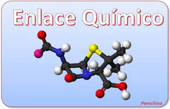

¿Qué son los enlaces químicos?

Se entiende por enlace químico a la combinación de átomos para formar compuestos químicos y darle estabilidad al producto resultante. En este proceso, los átomos pueden compartir o ceder electrones de su capa más externa para unirse y crear una nueva sustancia homogénea.
Cuando se produce un enlace químico, la estructura y características de los átomos no cambian, solo existe una compartición de electrones. Esto significa, por ejemplo, que al formarse el enlace químico del agua (H2O) sus elementos (oxígeno e hidrógeno) siguen siendo los mismos.
El ambiente que nos rodea es resultado de múltiples enlaces químicos que dotan de propiedades, tanto físicas como químicas, a la materia. Esto es producto de la fuerza generada por los átomos cuando se combinan y forman enlaces, pues estas pequeñas partículas son mucho más estables en conjunto que en solitario.
¿Cómo se produce un enlace químico?
Todo átomo está compuesto por un núcleo con protones de carga positiva y neutrones de carga neutra, y rodeado por una capa externa conocida como nube de electrones, estos últimos de carga negativa.
Las cargas opuestas se atraen, tanto dentro del mismo átomo, como entre otros átomos. Gracias a esta atracción, se forman los enlaces químicos entre elementos distintos.
Los átomos completan sus cargas eléctricas por medio del intercambio de los electrones: ceden, aceptan o comparten tales partículas para lograr una configuración electrónica estable que implique menor consumo de energía.
¿Cuál es la regla del octeto de Lewis y cuál es su relación con los enlaces químicos?
El físico químico estadounidense Gilbert Lewis enunció en 1917 la regla del octeto, que explica cómo se combinan los átomos de los distintos elementos químicos para formar enlaces.
Esta teoría plantea que los iones de los elementos de la tabla periódica completan sus últimos niveles de energía con 8 electrones. De esta manera, las moléculas consiguen una estabilidad a nivel de estructura electrónica.
Así, los elementos con altas cargas electronegativas ganan electrones hasta alcanzar el octeto, mientras que los de baja electronegatividad suelen perderlos para lograr el mismo objetivo.
¿Qué tipos de enlaces químicos existen?
Según el tipo de átomos enlazados, con sus propias características y mecanismos, un enlace químico puede ser:
Covalente: ocurre cuando los átomos no metálicos comparten electrones. En este tipo de enlace, los electrones se mueven entre los átomos dando origen a los enlaces covalentes polares (cuando comparten electrones de forma no equitativa) y apolares (cuando se distribuye equitativamente la cantidad de electrones).
Ejemplo: el agua (H2O), formada por dos átomos de hidrógeno y uno de oxígeno, y cuyo enlace viene dado porque cada átomo de hidrógeno comparte un átomo de oxígeno.
Iónico: ocurre cuando existe una unión de átomos metálicos y no metálicos, transfiriéndose una carga de electrones entre ellos. Como resultado, se forman iones cargados tanto negativa (aniones) como positivamente (cationes) y se genera una atracción entre sus cargas opuestas.
Ejemplo: el cloruro de sodio (NaCl), que combina un átomo de cloro y uno de sodio; mientras el primero tiene siete electrones, el segundo tiene uno. A la hora de formar el enlace iónico, el sodio cede su electrón al cloro y así se cumple la ley del octeto.
Metálico: son aquellos que se forman entre átomos de metales, cuyos núcleos atómicos se reúnen y están rodeados por sus electrones como una nube. Es un tipo de enlace fuerte que se distribuye a manera de red.
Todos los elementos metálicos puros están conformados por enlaces metálicos, por ejemplo: oro (Au), hierro (Fe), aluminio (Al), etc.
¿Cuáles son algunas características de los enlaces químicos?
Mantienen los átomos unidos dentro de las moléculas químicas.
La fuerza de un enlace químico viene determinada por la diferencia de electronegatividad (mientras mayor sea, mayor la fuerza de los electrones atraídos entre átomos).
Generalmente, los números de electrones son pares.
Los enlaces covalentes pueden existir en estado gaseoso, sólido y líquido.
Algunos enlaces covalentes son solubles en agua, otros en solventes orgánicos.
Son conductores de electricidad los enlaces covalentes ácidos en presencia de una solución acuosa (el resto de los enlaces
covalentes no son buenos conductores de electricidad), y los enlaces iónicos cuando se disuelven en agua o cuando se funden.
Los enlaces iónicos tienen altos puntos de fusión y ebullición.
Los enlaces metálicos son buenos conductores de calor y electricidad, se presentan en estado sólido y son altamente maleables.